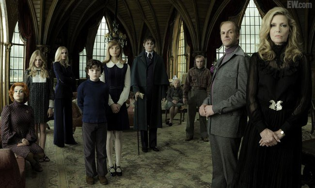
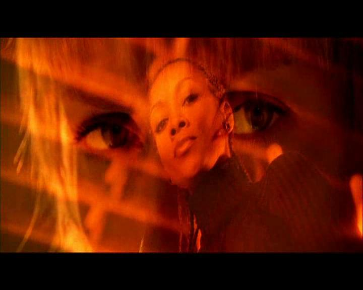

OTROS PLANOS
PLANO ENTERO
Este viene heredado de la fotografía, registra al personaje encajándolo cabeza y pies, cobra importancia, la cara y el pelo.

PLANO CONJUNTO
Hay personajes de cuerpo entero (sigue siendo un plano general) hay en tres o más personas, protagonistas o motivas, por la acción que están haciendo delante de la cámara entendemos el contexto.

PLANO SUBJETIVO - P.S./P.D.V

Registra la acción que está sucediendo delante de la cámara como si fuera nuestro protagonista, ayuda para que el espectador se meta en la historia, viene heredado de los video juegos, en algunos casos cuando los personajes que hay delante miran hacía ti, se le llama romper la cuarta pared, si salen las manos mejor todavía, hay que saber cuándo usar este tipo de planos.
PLANO SECUENCIA - P.S.
Es un plano de larga duración o una película entera grabada así, desde un punto a un punto B mínimo entre dos y tres minutos, este plano es muy difícil de realizar por la planificación que conlleva (actores, extras, efectos especiales, semovientes).
- Sunrise (1927)
- Sed de mal/tocado por el diablo (Orson Welles)
PLANO MASTER - P.M. – P.G – MINIMASTER (METER RECURSOS)
Se graba todo desde un punto, suele ser como un plano de referencia, se graba toda la acción para luego agregar todos los PLANOS INSERT, si la escena es muy compleja usamos más cámaras para grabar el mismo plano general desde los mismo ángulos y son llamados minimater. (normalmente esto se hace en video clips), Se reconoce porque se ve toda la habitación
PLANO INSERT /PLANO RECURSO
Son aquellos planos que van entre medias de un plano master, en televisión se llaman planos recurso. En un noticiero, el plano recurso es donde está mostrando información al lado del entrevistador. Cuando se entrevista a alguien, y hace un paneo hacia un lado.
PLANO CONTRA PLANO
Con confundir con el plano over-shoulder Están dos personajes o más hablando, y las cámaras están enfrentadas a los personajes, hay que seguir unas reglas: Se cruzan las miradas Puede ser con escorzo, que se vea la espalda, (se puede llamar plano contra plano ESCORZO) el escorzo se puede mostrar difuminado por cuestiones estéticas.

PLANO DORSAL /PLANO SEMISUBJETIVO
Es un plano que nos muestra lo que ve el protagonista, pero incluyéndolo en el plano, se ve más información a parte de lo que está él viendo, ejemplo en las películas de terror cuando aparece por detrás el malo, muestra información del personaje o de la escena, SIEMPRE SON IMÁGENES ESTÁTICAS.

PLANO LATERAL/PLANO PERFIL
Este plano registra la acción del personaje desde uno de sus perfiles, no son muy habituales pero cuando lo hacemos, cuando queremos mostrar este tipo de plano, es porque el personaje está teniendo un momento de secretismo, un momento de interiorización del pensamiento, o por ejemplo hagamos un acción que de frente no se vería, pueden ser planos muy cerrados, el personaje puede tener un momento de reflexión, puede ir acompañado de una voz en off.

PLANO OBJETUAL
Es un derivado del plano objetivo, pero se convierte en los ojos de un objeto, su nivel es meramente narrativo estético, y no se debe de abuzar de él, las películas que veáis que son grabadas en primera persona, ejemplo la bruja de Blair, en fotografía también se utiliza muchísimo este tipo de plano.

PLANO VOYEUR
También viene derivado del plano subjetivo, está entre plano objetivo y plano objetual, el personaje está espiando a alguien a través de un objeto, (la ventana indiscreta) SONY VEGAS: RECORTADOR DE GALLETAS, se usa para dar a entender que se usa un objeto.

PLANO INDIRECTO
Registra la acción a través de un reflejo, espejo, crista, móvil, una luna en el coche, unas gafas, un charco, le dan estética a la composición del plano y carga dramática , se usa en un plano indirecto en frente de un espejo cuando el villano quiere salir, ejemplo: el duende verde de spiderman pero no gollum/ puede estar dividida a la mitad con un charco en la ciudad, se usa mucho en fotografía.
PLANO PROFUNDIDAD
Es un plano que se usa para cine o para cartelera, están colocados en una cierta distribución que el director ordena Colocamos a los personajes dentro del plano por el peso visual, simetría, importancia, orden jerárquico, ejemplo: en una boda, en centro los novios y a lado y lado cada familia, se caracteriza por la lejanía que hay entre los personajes.

PLANO DOBLE
También es llamado plano triple, dependiendo el número de personas que salga, es cuando la acción registra a dos o tres personajes a la vez, puede ser a su vez un plano perfil, cuando hay más de tres es llamado plano CONJUNTO, cuando se quiere romper el eje del plano contra plano, es decir en las conversaciones.

PLANO OVER-SHOULDER
Es un plano dorsal pero en movimiento, viene heredado de los video juegos, es decir la vista de la persona, sigue a la persona.
PLANO SIMÉTRICO-ASIMÉTRICO
Es una plano y a la vez es una regla de composición, dividiendo el plano de arriba y abajo y a los lados, debe de haber el mismo número, forma colores o distribución que en el otro lado, no tienen que ser los mismos objetos a otro lado, el mando es lo que lo hace asimétrico, no lo introdujo Stanley Kubrik, el introdujo la plantilla, sino por Buster Keaton, la fotografía urbana es la mejor para la simetría.

PLANO SOBREIMPRESIÓN
Plano que también se utiliza en fotografía y cine y sirve para representar qué le está pasando al personaje por la cabeza, realmente es un efecto especial que hace coincidir dos imágenes en una, se lleva utilizando desde la película de Charlie Chaplin en la película the Kid, pasando por Woody Allen, Tarantino.
Se utiliza en transiciones a veces, pero generalmente se vuelve al personaje
|
|
|
|
|
|
|---|---|
 back
back next
next home
home